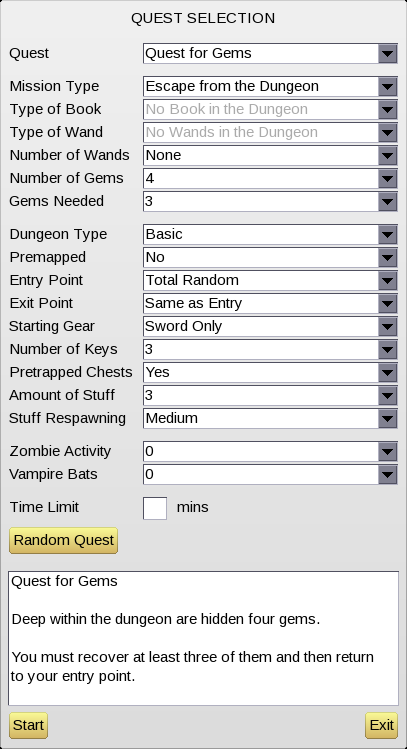

kts.MENU – defines the Dungeon Environment Customization Menu
kts.MENU = {
text = "Menu Title", -- e.g. "QUEST SELECTION"
initialize_func = function(S) ... end,
on_select = function(S) ... end,
describe_quest_func = function(S) ... return "quest description" end,
prepare_game_func = function(S) ... end,
start_game_func = function(S) ... end,
items = <list of menu_items>
}
menu_item = {
id = "id_string",
text = "Menu Item Text",
type = <"numeric" or "dropdown">, -- default is "dropdown"
digits = <number>,
suffix = "string",
choices = <list of menu_choices>,
choice_min = <number>,
choice_max = <number>,
show = function(id) ... return <string or number> end,
on_select = function(S) ... end,
constrain = function(S) ... end,
features = function(S) ... end,
randomize = function(S) ... return <menu choice id> end
}
-- note: a menu_item can also be the string "spacer"
menu_choice = {
id = "id_string",
text = "Menu Choice Text",
min_players = <number>,
max_players = <number>,
min_teams = <number>,
max_teams = <number>,
on_select = function(S) ... end,
constrain = function(S) ... end,
features = function(S) ... end
}
The Knights "Quest Selection" menu is a key part of the game, allowing users to customize both quest objectives and dungeon properties before play begins.
This is what the menu UI looks like in-game:

The dropdowns and text entry fields in the UI are referred to as menu items. Each menu item has an "id" (the string used to refer to the item internally) as well as its "text" (the actual name of the menu item as shown to the user). For example, the second menu item from the top, in the above screenshot, has id "mission" and text "Mission Type", and the sixth one from the top has id "num_gems" and text "Number of Gems".
For each menu item, the different options that can be selected are referred to as menu choices. Each menu choice also has both an internal "id" and some external "text"; but this time, the ids are allowed to be booleans or numbers as well as just strings. For example, for the "Mission Type" menu item, the different choices have ids like "escape", "retrieve_book" and so on, with corresponding texts of "Escape from the Dungeon", "Retrieve Book and Escape", and so on. For "Number of Gems", the menu choice ids are just the numbers from 0 to 6, with the texts being strings like "1" or "3" (or the string "None" if the number of gems is zero).
While on the menu screen, the currently selected menu choices are held in a Lua table called "S" (for "State" or "Settings"). The keys in this table are the menu item ids and the values are the selected menu choice ids. For example, in a Quest for Gems we might have S.mission = "escape", S.num_gems = 4, S.gems_needed = 3, S.dungeon = "basic", and so on.
The "S" table also contains fields num_players and num_teams giving the current number of players and teams in the game, in case this information is needed by the Lua code at any point.
Finally, "S" also contains some special fields named Is, IsNot, IsAtLeast and IsAtMost; these contain functions which can be used in the menu constraints system. This will be explained further below.
The set of available menu items, and corresponding menu choices, together with some other settings, are all defined in a Lua table named kts.MENU. This is set up by the standard Lua files provided with the game (see menus.lua) and mods are free to modify this table as they see fit. The following fields can be set in the kts.MENU table:
text gives the title string that will appear at the top of the menu (e.g. "QUEST SELECTION"). initialize_func is a function that is called when the menu is first opened. This can be used to install suitable default settings into the "S" table. For example, the standard initialize_func sets up a Quest for Gems. on_select is called whenever any menu setting is changed. This can be used to make any further changes required in response to the user's input. For example, the standard on_select function changes the "Quest" dropdown to "Custom" if any setting (other than "Quest" itself, or the time limit) is modified. describe_quest_func should return a string containing a natural language description of the current quest. This is used to fill in the text box that appears at the bottom of the menu screen. prepare_game_func and start_game_func are called when the game is started. The sequence is: first prepare_game_func(S) is called, then all features functions from all menu items (see below) are called, then all features functions from all selected menu choices (see below) are called, then finally start_game(S) is called. These functions should work together to configure the game as required and generate the dungeon (e.g. by calling kts.LayoutDungeon and related functions). items contains the actual list of menu items. This is just a Lua array in which each element is either the string "spacer" (which creates a small space between adjacent items) or else a Lua table representing an actual menu item. The menu item tables can have the following fields:
id gives the internal identifier for this menu item. This must be a string. This is something like "mission", "num_keys", "premapped" and so on. text gives the text that will be used to identify this menu item on-screen in the actual game. This is something like "Mission Type", "Number of Keys", "Premapped" or similar. type can either be "numeric" or "dropdown". A type of "numeric" means a field where the players have to type in an actual number (like the "Time Limit" field), whereas "dropdown" means a standard dropdown menu item. If type is omitted then it defaults to "dropdown". digits applies to numeric fields only, and specifies the max number of numeric digits that a player can enter into this field. suffix applies to numeric fields only, and specifies a string such as "mins" that will appear to the right of the text-entry field in the UI. choices gives the list of possible choices for this menu item, as an array. The elements of the array are Lua tables; see "Menu Choice tables" below for details. choice_min and choice_max give an alternative way of defining menu choices. If these are used, then the menu choices are all the integers between choice_min and choice_max inclusive. The "id" of each choice is equal to this integer. The text shown on-screen (in the dropdown) will also just be that integer (converted to a string) by default, but see also the show function (below) for a way to override that. "dropdown" menu items should specify exactly one of either choices, or both choice_min and choice_max. Menu items of "numeric" type should not specify any of choices, choice_min or choice_max since in that case, the "choices" are just numbers entered directly into a text field, and there is no separate list of choices. show is a function that is useful when choice_min and choice_max are used. This function takes a choice id (i.e. integer between choice_min and choice_max) and returns a string or number to show in the dropdown, overriding the default of just showing the choice id directly in the dropdown. The game uses this to show "None" instead of "0" for certain menu items (e.g. "Number of Gems"). on_select is called whenever the setting for this menu item is changed. This can be used to change other menu settings in response if desired (e.g. the game uses this to implement the "Quest" dropdown, which loads one of the pre-defined quests into the menu). constrain can be used to add "constraints" on this menu item. See "Constraints" below for details. features is called before any game begins. (See also the description of prepare_game_func and start_game_func above.) randomize is called when the "Random Quest" button is clicked. The randomize field is optional; if it is not present, then "Random Quest" will just select one of the possible choices for this menu item at random. Otherwise, randomize(S) will be called, and the returned value (which should be the id of one of the valid menu choices for this item) will then be used for the random quest. This can be used to limit the possible random quests; for example, while "num_wands" can be set from 0 to 8 (to accommodate games with large numbers of players), a Random Quest will never set it above num_players + 2. The menu choice tables (used in the choices field of a menu item) can have the following fields:
id gives the internal identifier for this menu choice. This can be a boolean, number, or string. text gives the string that will appear in the dropdown menu for this choice. While id is usually a short identifier like "ashur", text will usually be a longer string like "Lost Book of Ashur". min_players and max_players (if set) mean that this choice can only be selected if the number of players in the game is between the given min and max (inclusive). An example of where this is useful is in the "Exit Point" menu item; an exit point of "Other's Entry" only makes sense in a two-player game, so that particular menu choice has both min_players and max_players set to 2. min_teams and max_teams are similar, but they refer to the number of teams, instead of number of players. on_select is a function that gets called whenever a player selects this choice in the menu. constrain is used with the "Constraints" system; see below. features is called whenever a game is started with this menu choice in effect. See also prepare_game_func and start_game_func above. "Constraints" refer to any kind of restrictions on the available menu settings. For example, "Gems Needed" can never be set higher than "Number of Gems". As another example, if "Mission Type" is "Retrieve Book and Escape", then "Exit Point" cannot be "No Escape", and "Type of Book" cannot be "No Book in the Dungeon".
To allow setting up these constraints, a constrain Lua function can be attached to any menu item or menu choice. If the function is attached to a menu item, then the constraints it defines are always active, and if it is attached to a menu choice, then the constraints are only active when that menu choice is selected.
The constraint function is passed the "S" table and it should call one or more of the special functions S.Is, S.IsNot, S.IsAtLeast and S.IsAtMost. These do the following:
S.Is(item, choice) means that menu item id item is forced to always be set to choice id choice. S.IsNot(item, choice) means that item id item must be any setting other than choice id choice. S.IsAtLeast(item, choice) means that the choice id corresponding to menu item id item must be at least the given choice (this only makes sense for numeric choice ids). S.IsAtMost(item, choice) is similar, except the choice id must be at most the given choice. The game will try to ensure that any specified constraints are satisfied at all times. For example, options that would violate a constraint will simply not be shown as part of the relevant dropdown(s), and will not be selectable. If the menu ever does get into a state where the constraints are not met, then the game will try to put it back into a valid state again (by changing menu settings as required). This might not always succeed (see "Bugs" below), but as long as the constraints are not too complex (or indeed impossible, e.g. asking for the same menu item to be both less than 1 and greater than 1 at the same time), it should work well enough.
See "Examples" below for some examples of things that can be done using the constraint system.
The constraint solver is not perfect; if the constraints are extremely complicated, then the solver might "fail" and leave the menu in an invalid state. Also, if the constraints are actually impossible to solve, then no error message will be reported; instead the menu will just be left in some inconsistent state.
The best way to understand the menu system is probably to study menus.lua which is where the standard kts.MENU is defined. See also the related files preset_quests.lua and quest_description.lua. Finally, if you want to see how the various menu settings get converted into actual gameplay features, take a look at dungeon_setup.lua, as well as the logic in the features functions and in start_game_func (the latter just calls through to start_game in dungeon_setup.lua).
As promised above, here are some examples of how the "constraints" system can be used to achieve various effects:
-- This ensures that "Retrieve Book and Escape" quests always contain
-- both a book and an exit point.
-- It is added to the "retrieve_book" choice of the "mission" menu item.
constrain = function(S)
S.IsNot("exit", "none") -- must have exit
S.IsNot("book", "none") -- must have book
end
-- This ensures that "Destroy Book with Wand" quests contain a book
-- and a wand, but no exit point.
-- It is added to the "destroy_book" choice of the "mission" menu item.
constrain = function(S)
S.IsNot("exit", "none")
S.Is("book", "none")
S.IsAtLeast("num_wands", 1)
end
-- This ensures that Gems Needed is no more than Number of Gems.
-- It is added to the "num_gems" menu item (although it could
-- equally well have been added to "gems_needed", or indeed any
-- other menu item, although attaching constraints to the menu
-- items that they most relate to is generally the best idea).
constrain = function(S)
S.IsAtMost("gems_needed", S.num_gems)
end
-- This forces the "Type of Wand" to be "None" when 0 wands are
-- selected, or anything other than "None" when a non-zero number
-- of wands is selected. It is added to the "num_wands" menu item.
constrain = function(S)
if S.num_wands == 0 then
S.Is("wand", "none")
else
S.IsNot("wand", "none")
end
end
TODO